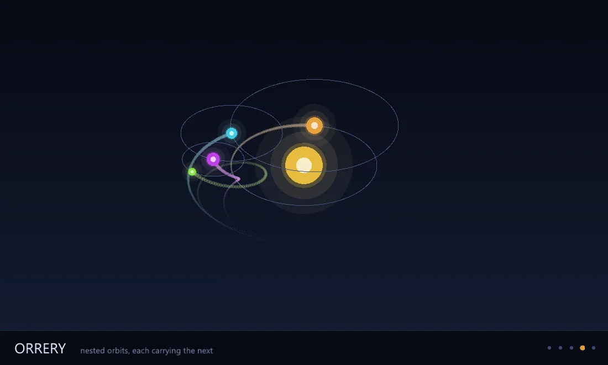

Graphisme
Un seul moteur Zig sur douze couloirs : texte, couleur, cartographie, GPU, sous un seul système gouverné.
6 Strong · 3 Solid · 2 Partial · 1 Emerging
Mesuré contre : Skia · D3 · Graphviz · Dossiers : base/graphics · Le guide des fonctions de ce domaine

Repensé depuis les premiers principes
Ce que Softanza a gardé de ce qui marche, et ce qu'elle a repensé, tel que la bibliothèque l'a écrit dans ses documents de conception et ses narrations.
La manière SoftanzaLe graphisme n'est pas un nouveau moteur : c'est la couche GPU que Softanza possède déjà, à laquelle on apprend à dessiner en plus de calculer.
Gardé des meilleures pratiques
- La mise en forme du texte est confiée à HarfBuzz, et l'ordre bidirectionnel à SheenBidi. Bien façonner l'arabe est une spécialité de longue haleine, qu'on ne réinvente pas. source
- Les fenêtres, sur les trois systèmes de bureau, viennent de GLFW, une petite bibliothèque éprouvée, plutôt que de trois couches écrites à la main. source
- Le système de couleurs garde des idées éprouvées. Chaque palier de teinte nomme son rôle (fond, bordure, texte), et chaque remplissage a sa couleur lisible associée. source
Repensé
- Calcul et dessin partagent un seul processeur graphique : une simulation alimente l'image sans copie. Dans un essai, 16 octets par image partaient vers la carte au lieu de 1,7 Mo. source
- Le texte Unicode est exigé dès le premier jour, avec l'arabe comme test d'acceptation. Une seule mise en page sert toutes les sorties : vecteur et pixels ne peuvent pas diverger. source
- Tout dessin peut toujours devenir du SVG, sans GPU, et donc être produit et vérifié partout. Sans carte graphique, une demande de PNG est refusée et comptée. source
- Les dégradés de couleur sont calculés en OKLCH : chaque palier s'éclaircit régulièrement, sans jamais se désordonner. Le contraste devient un nombre qui peut faire refuser un thème. source
Most of the field ships one lane well: Skia renders, D3 charts the web, Graphviz lays out graphs, spatstat does the statistics and draws nothing. Softanza is one Zig engine behind declarative Haro faces that reaches across twelve of those lanes at once; its advantage is being coherent across twelve lanes under one governed colour and text system, which no single competitor is.
Ce qu'un maker en fait, et ce qui se distingue
- coherent across twelve lanes under one governed colour and text system
- Arabic kashida justification at font-declared points
- the rare lane where a graphics library also computes the statistics it draws
- compute and render zero-copy on one wgpu device
Ce qui est dû
- general paths, curves & transforms
- complete the chart family
- colour-blindness simulation
- PDF export & the raster floor
La manière Softanza, exécutée
Ce que Softanza fait autrement dans ce domaine, montré par du code tiré de ses narrations et de ses gardes, et exécuté pour cette page.
Un même canevas répond en SVG sans aucun GPU, et l'image vectorielle porte exactement la taille et le cercle déclarés.
# the guard's fixture: a committed Arabic font subset
cFixture = "../gpu/fixtures/amiri_arabic_subset.ttf"
oF = new stzFont(cFixture)
oG = new stzCanvas(220, 120)
oG.SetBackgroundQ("#101418").
AddCircleQ(60, 60, 40).FillQ("#e0a030").
AddTextQ("Softanza", 110, 70).SetFontQ(oF, 18).ColorQ("#ffffff")
cSvg = oG.ToSVG()
chk("the SVG tier answered", len(cSvg) > 100)
chk("it carries the canvas size", substr(cSvg, 'width="220" height="120"') > 0)
chk("the circle's EXACT geometry is in it", substr(cSvg, 'cx="60" cy="60" r="40"') > 0)[OK] the SVG tier answered [OK] it carries the canvas size [OK] the circle's EXACT geometry is in it
exécuté le 2026-10-01 21:17 dans la bibliothèque au commit 0e72e2e2c ; tiré de base/test/graphics/graphics_faces_narrated.ring
Le mot Softanza écrit en arabe est façonné en une seule séquence de huit glyphes, de droite à gauche ; placé entre deux mots latins, il donne trois séquences.
# the guard's fixture: a committed Arabic font subset
cFixture = "../gpu/fixtures/amiri_arabic_subset.ttf"
oF = new stzFont(cFixture)
cAr = char(0xD8)+char(0xB3) + char(0xD9)+char(0x88) + char(0xD9)+char(0x81) +
char(0xD8)+char(0xAA) + char(0xD8)+char(0xA7) + char(0xD9)+char(0x86) +
char(0xD8)+char(0xB2) + char(0xD8)+char(0xA7)
chk("Arabic measures positive (a real shaped advance)", oF.WidthOf(cAr, 24) > 0)
chk("Arabic is ONE visual run", oF.RunCountOf(cAr, 24) = 1)
chk("mixed script is THREE runs", oF.RunCountOf("abc " + cAr + " xyz", 24) = 3)
chk("8 Arabic codepoints shape to 8 glyphs", len(oF.GlyphsOf(cAr, 24)) = 8)[OK] Arabic measures positive (a real shaped advance) [OK] Arabic is ONE visual run [OK] mixed script is THREE runs [OK] 8 Arabic codepoints shape to 8 glyphs
exécuté le 2026-10-01 21:17 dans la bibliothèque au commit 0e72e2e2c ; tiré de base/test/graphics/graphics_faces_narrated.ring
La lisibilité est un nombre qui peut dire non : du gris moyen sur blanc est refusé, du noir sur blanc passe, et une couleur sur elle-même est refusée.
chk("mid-grey on white is REFUSED", NOT StzIsLegible("#999999", :White))
chk("black on white passes", StzIsLegible(:Black, :White))
chk("a colour on itself is refused", NOT StzIsLegible(:Danger, :Danger))[OK] mid-grey on white is REFUSED [OK] black on white passes [OK] a colour on itself is refused
exécuté le 2026-10-01 21:17 dans la bibliothèque au commit 0e72e2e2c ; tiré de base/test/graphics/gg_color_c3.ring
Les couloirs, un par un
Les couloirs et leurs notes sont cités tels qu'ils ont été lus à la source, le Read from the source on 2026-09-15.